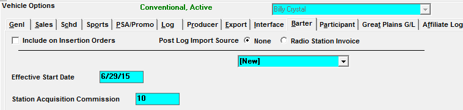

Acquisition Costs
Acquisition costs are fees paid to a station or vendor from acquiring air time inventory or facilitating or creating NTR items.
Setup
Traffic->Site Options
Options Tab
Check on Rep and Barter if applicable.
Prior to Version 7.1
Check on the Acquisition Cost checkbox in the Schedule Line Overrides area. You will need a password from support@counterpoint.net to do so.
Version 7.1 and Higher
You must check on Barter to enable acquisition costs.
Sales Tab
There are two questions that affect the look of the Insertion Orders report:
Insertion Address from Payee/Site (Invoices)/Vehicle: This question determines the address that will appear on the insertion order.
- Payee: This will print the Agency’s address on the insertion order.
- Site (Invoices): This will print the Network’s address as defined in Traffic Site Options->Invoices.
- Vehicle: This will print the vehicle’s address as defined in the Vehicle Options->General Screen.
Show Spot Prices on Insertion Orders for $0 Acquisition Costs: If checked, the insertion order will display the air time spot cost or NTR item rate if the acquisition cost is $0.
Comment (Cmnt) Tab
Define a standard comment to appear on all Insertion Orders by entering text in the Insertion Comment field.
Vehicle Options
Rep Vehicles Setup
Vehicle Screen
If using Rep, define the Market Vehicle Group for the Network/Station Spot Report. If no market is defined, the report will read “No Market.”
Vehicle->Options->Barter
On software versions prior to version 7.1, the Barter screen is only available for use with Rep vehicles. The Barter screen allows you to set the acquisition costs and terms between your network and your rep stations, which will be defaulted in the acquisition field in proposal/orders, and calculated in net-net reports.
Previously created terms can be viewed by selecting them from the dropdown menu near the top of the screen. New Terms are created by selecting New from the dropdown menu, then entering a start date for the Barter agreement in the “Effective Start Date” field, along with the default acquisition cost for each spot length used. The default acquisition cost will be used by default as the acquisition cost when creating lines for this vehicle on Proposals and Orders, and will be deducted on net-net reports. If the default acquisition cost is different from the actual spot cost, the actual acquisition cost can be entered in the actual acquisition cost field for each spot length used.
Determining Your Barter Method
There are five methods available:
- “All Cash”: is used when you pay for every spot booked with the station.
- “Pay When Minutes per Week/Month/Year Exceed X”: is used if a certain amount of minutes per week, month or year have no cost, but additional minutes over the agreed upon limit per week, month or year must be paid. (The balance field is used to track the balance for “per year” terms and is updated automatically when running the Barter Payments report for the first time for a month.)
- “Pay When Units per Week/Month/Year Exceed X”: is used when there is a certain amount of free units per week, month or year, but the acquisition cost must be paid when the number of units exceed the agreed upon amount. (The balance field is used to track the balance for “per year” terms and is updated automatically when running the Barter Payments report for the first time for a month.)
- “After every X paid spots per week/month/year, allow Y free spots per week/month/year”: is used if you receive a certain amount of free spots for a certain amount of spots purchased. For example, after setting it to “every 3 paid spots per week, allow 1 free spot per week”, that would mean if there were eight spots for the week, six would be paid and two would be free.
- “None”: all the spots are free (no acquisition cost applied).
Insertion Comment
The insertion comment can contain any pertinent information about the Barter agreement, and will appear on the insertion order for the station. Each vehicle can have a unique Insertion Comment.
Version 7.1 and Higher
On version 7.1 and above, the Rep vehicle options that are available on the Barter tab continue to work as before, but additional options are available for some non-Rep vehicles types.

- Include on Insertion Orders: This allows Conventional, NTR, Rep and Selling vehicles to appear in the vehicle selection list for the Insertion Order report.
- If the question is left unchecked, those vehicles types are defaulted to appear on the orders.
- Post Log Import Source: This should be set to None, unless PDF invoices are imported from this station using the “Radio Station Invoice” feature.
- Terms dropdown: New terms can be created and existing terms can be viewed by selecting them from this dropdown.
- Effective Start Date: The start date of the currently selected terms.
- When creating new terms, the effective start date must be the first Monday of the broadcast month and it cannot be prior to the last month invoiced.
- If a rate change occurs in the past, what is owed to the station must be manually calculated.
- Station Acquisition Commission: If gross acquisition dollars are used, a variable acquisition commission percentage rate can be entered to automatically calculate the net acquisition amount owed to the station.
- The commission due to the station is calculated from the acquisition fee entered in rate card or the contract and the commission rate entered in this field.
- If acquisition dollars are entered as net figures, this field can be left at zero.
Spot Length Index
On the Barter tab, if Barter is enabled and the vehicle is a Conventional or Selling vehicle, a Spot Lengths Index will appear as shown below. Define the index values to use for determining the acquisition cost at the contract line level by entering index values for each valid spot length.

As an example of how this could be set up for a 30 and a 60 second spot length, if the acquisition cost on the rate card was equal to the acquisition cost for the 30 second spot, then enter the number “1” as the index for the 30 second spot and press Save. If the acquisition cost for the 60 second spot is double the acquisition cost of the 30 second spot, then enter “2” as the index value for the 60 second spot length and press Save. Other index values can also be entered. An index value of 1.5 means the acquisition cost would be 1.5 times the default cost; an index value of .5 means the acquisition cost would be half the default cost; and so on.
When entering a contract line, if there is no index value for the corresponding spot length defined on the vehicle spot length index table, the system will then check the rate card Terms screen for the index value to use for the matching spot length and use that if it exists. If there’s no index value there either, then the acquisition cost that gets pulled into the contract will be zero.
Rate Card
In Version 7.1 and above, if “Barter” is checked in Site Options->Options, the Acquisition Cost (Acq Cost) column will appear on the Rate Card, as shown below.
The acquisition column allows you to define default acquisition costs for selling and conventional vehicles. When creating new contract lines, the default acquisition cost will be automatically pulled in from the rate card (when possible). These rates can be altered on the contract if the user has permission to do so.
If entering gross acquisition dollars, you can define an acquisition commission percentage in Vehicles->Options->Barter to arrive at the net figure due to the station.
The Rate Card report will show acquisition dollars for proofing purposes.
Entering Acquisition Costs
Proposal and Order entry
Acquisition Costs are entered for contract lines on Proposals and Orders screen. The Acquisition Cost field appears in the second override field.
Acquisition costs are entered in the “Acquisition $’s” field as shown below.
Note: When a default acquisition cost is defined on the rate card for the corresponding vehicle and daypart, if there is no index value for the corresponding spot length defined on the vehicle spot length index table, the system will then check the rate card Terms screen for the index value to use for the matching spot length and use that if it exists. If there’s no index value there either, then the acquisition cost that gets pulled into the contract will be zero.
NTR Acquisition Costs
Costs associated with NTR items can be entered in the “Acq Cost/Item” field on the NTR tab.
Revising Acquisition Costs
Prior to invoicing, acquisition costs can be editing in the acquisition field on the contract (if user permissions allow it). After a contract has been invoiced, acquisition costs can only be edited in the Backlog screen. For assistance with using the Backlog screen, please contract support@counterpoint.net.
Reports
Insertion Order
The insertion order report produces an order per vehicle that can be sent to the station/vendor. See the Orders and Spots Report Samples book for samples.
It shows the same header information as the order.
- If there is no acquisition commission rate defined, net acquisition costs automatically show on the insertion order
- If using acquisition commission rates, the gross, commission rate, and net amounts will appear when viewing the report with rates/no research checked
- You can suppress the rate by deselecting the ‘rate’ option
- Check option ‘Include NTR’ to show on the insertion order
Billed & Booked Report
The Billed and Booked Report has an option to include acquisition costs only. The report shows the total acquisition costs.
When you select T-Net (Triple Net) on the Billed and Booked, you will see the spot rate less agency commission, less acquisition cost.
Network/Station Spot Report
The Network/Station Spot Report shows the acquisition cost defined in the schedule line. Spot counts, network revenue and station costs are obtained from the contracts. Canceled spots are subtracted from the contract count. Network inventory includes all avails.
For conventional vehicles that have network inventory defined in the vehicle options, this report will also calculate the % of spots they have purchased based on the total number of network and station spots booked. In addition, the % of network inventory used ‘to date’ is shown.
Sales Commission Report
The acquisition amount is an option for this report. When checked on, the acquisition cost is automatically deducted from the contract revenue on the report.
Rate Card
The Rate Card report can be used to proof default acquisition costs that were entered by selecting the “default acquisition fee” option.
Margin Acquisition Report
The Margin Acquisition Report compares acquisition costs to net revenue to arrive at a margin percent to determine if a contract or vehicle is profitable or not.
The report is generated and totaled by advertiser and product, with vehicle and contract subtotals as options. The schedule lines from proposal and orders are used, not the scheduled spots. Note: contracts with $0 rates and acquisition costs are bypassed.